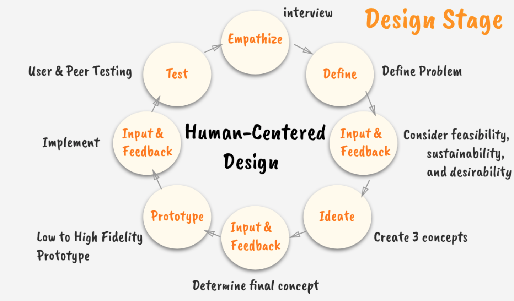

Role: UI/UX Designer & Project Manager
Tools: Sketch and Microsoft Excel
Cart Catcher is a Life Skills Mini Game for our client, It'sAllAboutTheKids organization. It is designed to teach important life skills such as budgeting and choosing healthy foods to kids. Kids can have interactive and fun game while learning life skills.
Cart Catcher was designed along with 6 others in engineering design course at University of Calfiornia, San Diego.
“Children need a fun, educational, and engaging game that promotes budgeting and healthy eating because these skills are not taught in a traditional classroom setting.”
Our goal of this project is to make a life skills game that teaches chlidren the importance of budgeting when buying groceries. The client is It’s All About the Kids, a non-profit organization that creates helpful and skill-building programs for kids and families with less fortunate backgrounds. First thing we did was stakeholder analysis.
Our team came up with total three game concepts. We generated peer and user testing with each concept of paper prototypes. Based on the testing, we also have created feedback capture grid for evaluation.
To determine our final concept, we have decided several criterias and discussed the concepts with client. The criterias and evaluation is summarized in pugh chart below.
The game Cart Catcher begins with the user being asked to pick up money using the different U.S. denominations to create the total amount for their budget. Once the user has their money, they will be asked various questions which can be answered by swiping the correct items off the grocery conveyor belt into the shopping cart. The question will describe how many items to pick up as well as a nutritional fact about the items in general.